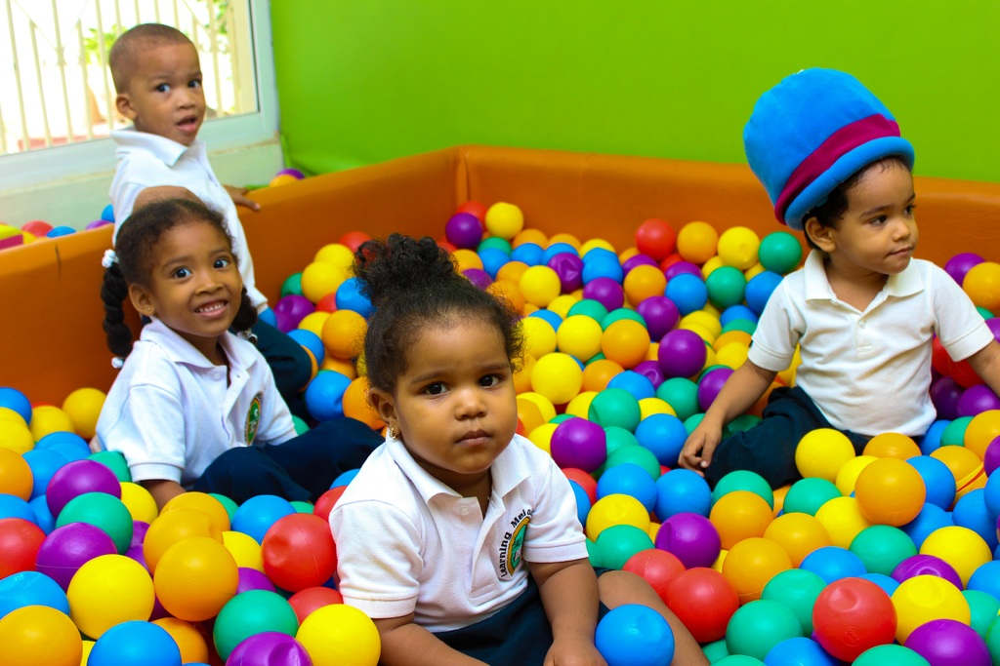
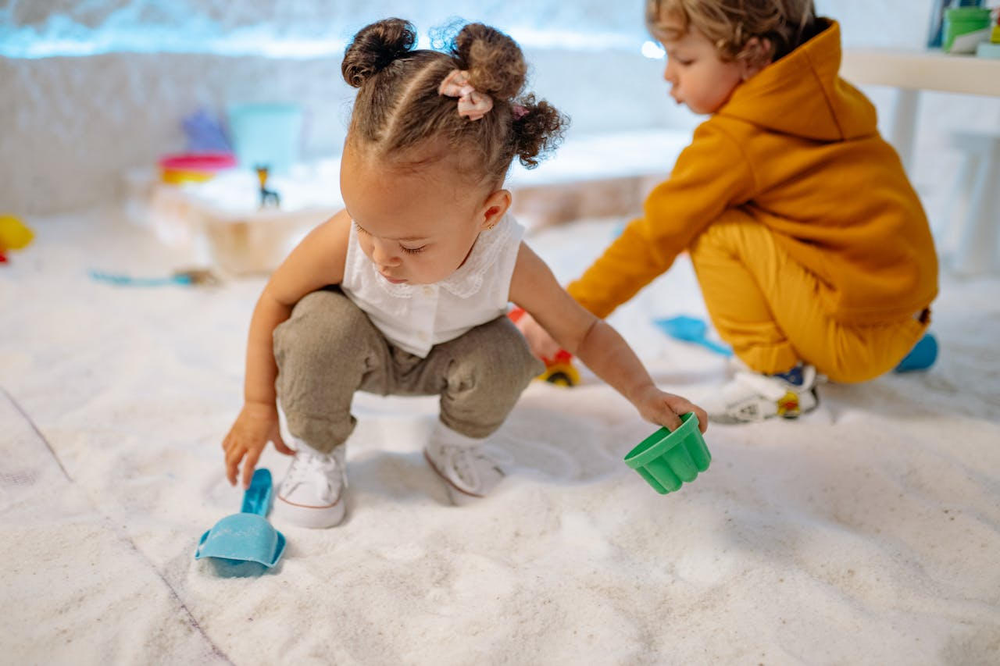

Itt a gyermekek boldog és fejlesztő környezetben részesülnek számos izgalmas szolgáltatásban. Játékos tanulásunk segíti a kicsiket a tudás és kreativitás felfedezésében. Kreatív tevékenységeink, mint a festés, kézműveskedés és zene, ösztönzik a gyermeki képességeket.
Az egészséges étkezés kiemelt figyelmet kap, biztosítva, hogy minden gyermekünk optimálisan táplálkozhasson. Szakértő pedagógusaink elkötelezettek a személyes fejlődés és a pozitív közösségi tapasztalatok iránt. Rugalmas időbeosztásunk segíti a szülőket a hétköznapokban.
